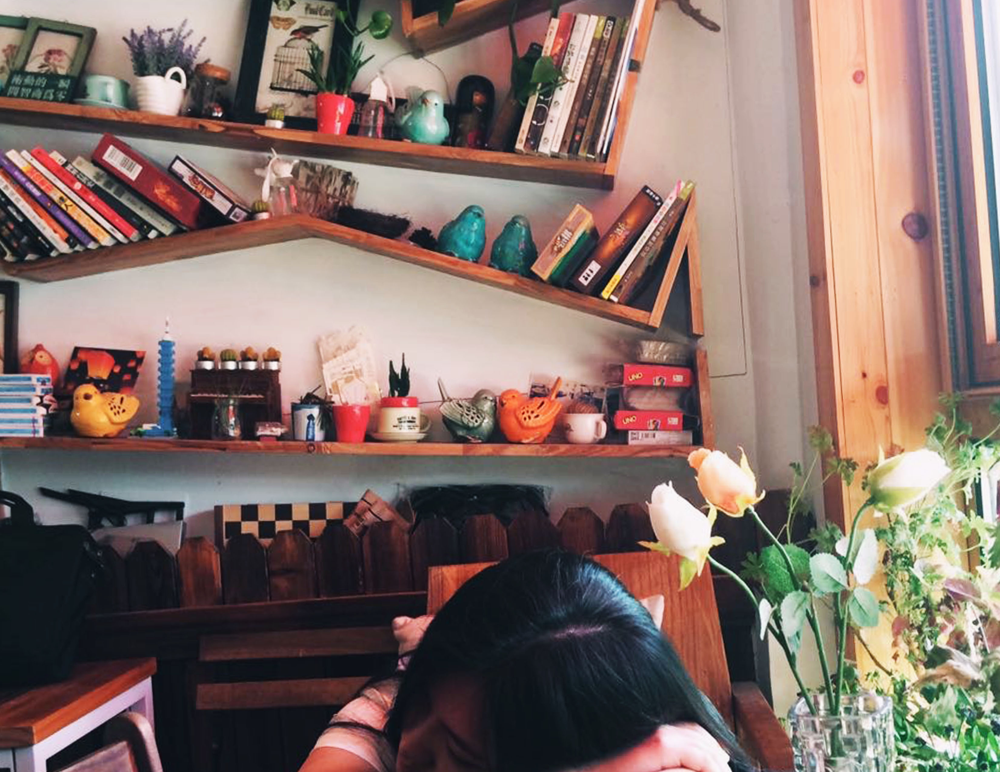

I am a
homeworker.
I am a
homeworker.
I seldom go out for earning money or working. Relaxation and comfort mean a lot to me when it comes to work. As a homeworker, I have many options and actually have several jobs to do. Most of them are related to music and food.
You can call me a writer, a music composer, a gourmet, a traveller, and even more. I haven't figured out an exact way to define myself yet. I guess "a homeworker" works just well for now. Or you may now think me as a guitar teacher or a director of a music studio, Guitaroof.
I was born in Guangdong, China.
I was born in Guangdong, China. I grew up there and got my highschool diploma there. I then went to America for further study.
I graduated from Pratt, NY.
After high school graduation, I came to America for bachelor and master study in the field of music. Five years ago, I graduated from Pratt, the Art Institute in Brooklyn, New York. I also have earned a master degree in food science.
I set off for
adventures in career .
I had been exploring around for the last few years, changing my jobs for several times in the past few years. I enjoyed this kind of life style, always trying things new. But I also know that it is important to find something to stick with. Last year I finally settled down as, which I preferred to define myself as, a homeworker.
I enjoy staying at home and keep myself away from offices or any outside workplaces. I prefer a quiet and comfortable workspace, especially where I can wear my pajamas. It is not that I do not like to go outside. Instead, I love hanging out for travel, for food, for meeting with friends, and for all other kinds of fun things.
Things about
art and food.
In the past few years, I have been in art museums as interior design advisor and tour guide. Later, I got hired by local food magazines and music magazines as well, writing articles, songs or comments, which are the kinds of things that I am still doing now.
My last occupation was at
a TV program.
I used to work in a food TV program in New York as one of the producers. It was the year before last year and was a wonderful experience for sure. But it was in California and I preferred to get back New York at that time.
A change.
I then decided to change my vocation after working for the program for one year. Beyond objective constraints, I wanted some more challenges, perhaps something new.
The studio is
growing.
This studio is well-known among new music composers nowadays. It is landing on several other states as well, including Wisconsin, California, Ohio, North Carolina, Michigan and Florida.
Something I do
for the studio.
As the director of the studio, I am always invited to write articles for or make comments on local music magazines and newspapers. We provide all kinds of services related to music.
I own a music studio, called Guitaroof. You can find out more information from our YouTube channel. This studio is well-known among new music composers nowadays.
It is landing on several other states as well, including Wisconsin, California, Ohio, North Carolina, Michigan and Florida.
As the director of the studio, I am always invited to write articles for or make comments on local music magazines and newspapers. We provide all kinds of services related to music.